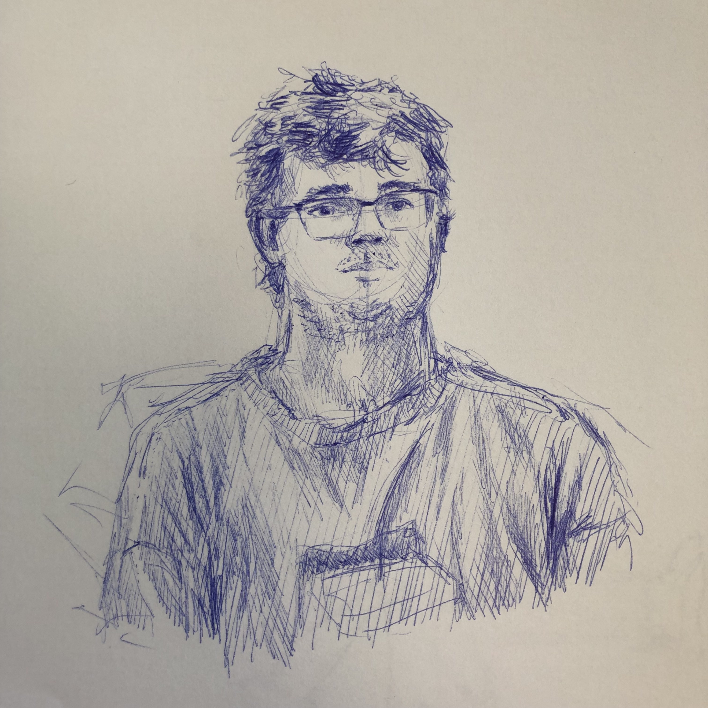

Bio
Je suis un game designer, level designer et développeur freelance originaire de Clermont-Ferrand et habitant à Montpellier. Je détiens un master de game design de l'université Paul-Valéry Montpellier 3, un DESS de game design de l'école NAD-UQAC de Montréal, et un DUT Informatique. Je développe sur Unity et Unreal. Je suis disponible pour toute question d'ordre professionnel.
J'aime beaucoup faire du jeu de rôle, principalement en tant que MJ, et je suis constamment en train de préparer de nouvelles campagnes. Niveau jeu vidéo, j'oscille entre les jeux de stratégie (Civilization 5, Alpha Centauri, etc) et les jeux narratifs (Night in the Woods, Disco Elysium, etc). Je suis le genre de joueur à me plonger entièrement dans un jeu avant de passer au suivant. Mes auteurs de roman préférés sont Philip K.Dick, Cormac McCarthy et John Dos Passos.